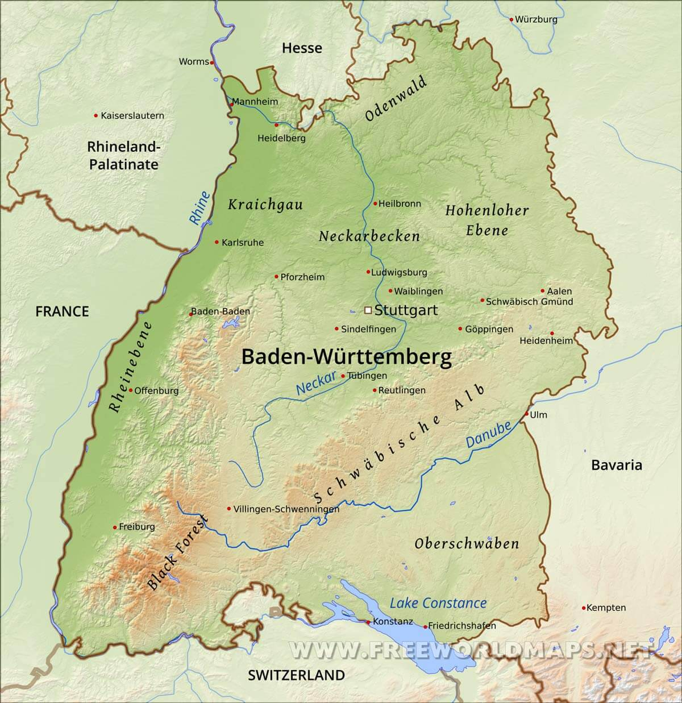
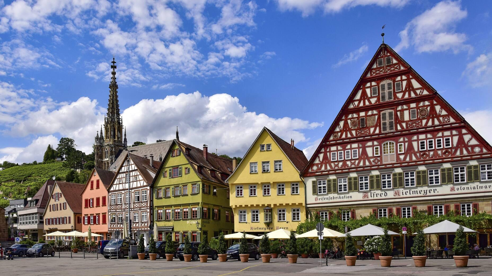
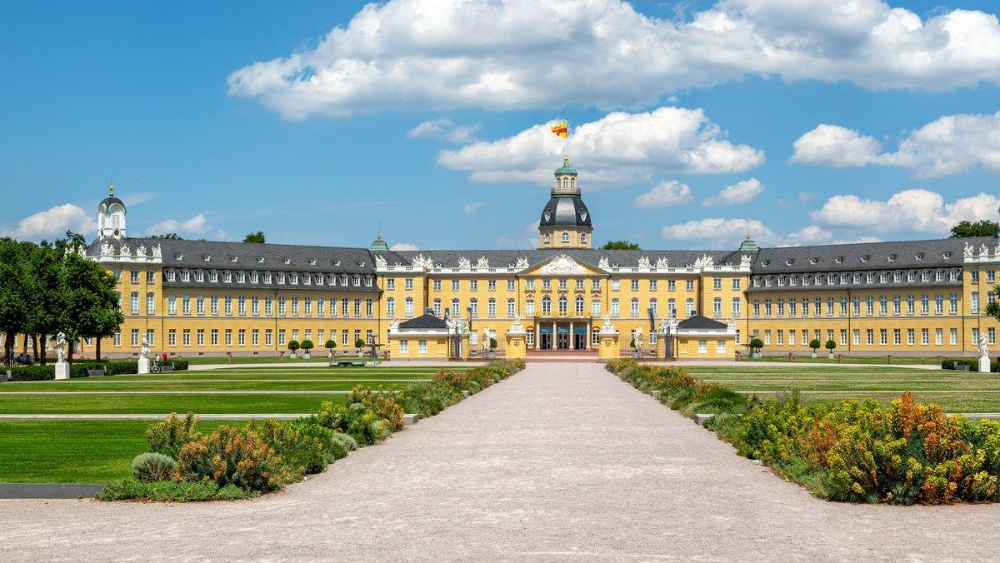

General numbers
Major Cities
The following is a list of the major cities in Baden-Württemberg, sorted by population
History
The history of Baden-Württemberg stretches back thousands of years, long before the modern state existed. Archaeological discoveries, including prehistoric tools and artworks found in caves of the Swabian Jura, demonstrate that humans inhabited the region during the Stone Age. Some of Europe's oldest known figurative artworks have been discovered in these caves.
During the Iron Age, Celtic communities established settlements throughout the region. One of the most significant was Heuneburg, a fortified settlement near the Danube that became an important center of trade and political activity around the sixth century BC.
Roman expansion reached southwestern Germany during the first century AD. The Romans established military forts, roads, and settlements, including those at present-day Rottweil and Baden-Baden. Much of the region became part of the Roman provinces of Germania Superior and Raetia. The Upper Germanic-Rhaetian Limes formed an important defensive frontier.
During the third century, increasing pressure from Germanic groups, particularly the Alemanni, contributed to the Roman withdrawal from territories east of the Rhine.
By the fifth century, the region had largely come under Alemannic control. Following their defeat by the Franks around 496, the Alemanni gradually became integrated into the expanding Frankish kingdom.

During the early Middle Ages, the territory of present-day Baden-Württemberg formed part of the Frankish Empire. Christianity spread throughout the region, supported by monasteries and religious institutions that became important centers of education, agriculture, and administration.
Following the division of the Carolingian Empire in 843, the region became part of East Francia. During the tenth century, the Duchy of Swabia emerged as an important political territory within the developing Holy Roman Empire.
Over the following centuries, political authority became increasingly fragmented. Powerful noble families, including the Hohenstaufen, Zähringen, Hohenzollern, and Württemberg dynasties, competed for territory and influence. Numerous monasteries, bishoprics, and Free Imperial Cities also exercised considerable independence.
Cities such as Ulm, Esslingen, Freiburg, and Heidelberg developed into important centers of trade, craftsmanship, and education. Heidelberg University, founded in 1386, became one of Europe's oldest universities.
During the 13th century, the decline of the Hohenstaufen dynasty accelerated territorial fragmentation. The Counts of Württemberg gradually expanded their possessions, while the Margraves of Baden consolidated their own territories along the Upper Rhine.
By the late 15th century, Württemberg had emerged as a significant regional power. In 1495, it was elevated to a duchy, strengthening its position within the Holy Roman Empire.

During the 16th century, the Protestant Reformation transformed much of present-day Baden-Württemberg. Württemberg adopted Protestantism in 1534, while other territories remained Catholic. The Thirty Years' War (1618–1648) subsequently devastated the region through warfare, disease, and population loss.
The Napoleonic Wars fundamentally reshaped southwestern Germany. In 1806, Württemberg became a kingdom, while Baden became a grand duchy. Both joined the German Empire in 1871, retaining their separate political identities.
Industrialization during the 19th century transformed the region into a major manufacturing center. Automotive pioneers such as Carl Benz, Gottlieb Daimler, and Wilhelm Maybach contributed to developments that established its international industrial reputation.
Following Germany's defeat in the First World War, Baden and Württemberg became republican states. Under Nazi rule, political opposition was suppressed, Jewish communities were persecuted, and the region suffered extensive destruction during the Second World War.
After 1945, Allied occupation divided the region into three states: Württemberg-Baden, Baden, and Württemberg-Hohenzollern.
On April 25, 1952, these territories united to establish Baden-Württemberg, with Stuttgart as its capital.
During the following decades, the state experienced rapid economic growth, becoming a leading center for automotive manufacturing, engineering, research, and technology. Today, Baden-Württemberg is one of Germany's most economically significant federal states.
Politics
Baden-Württemberg is one of Germany's 16 federal states and operates under a parliamentary democratic system. Its political institutions are based in Stuttgart, the state capital. The state has its own constitution, government, parliament, and judiciary, while sharing responsibilities with Germany's federal government.
The state parliament, known as the Landtag, is elected by citizens every five years. It passes state legislation, approves the budget, oversees the government, and elects the Minister-President (Ministerpräsident), who leads the executive branch. The state government is responsible for areas including education, policing, cultural affairs, and regional administration.
Historically, Baden-Württemberg was dominated by the Christian Democratic Union (CDU), which led the state government continuously from 1953 until 2011. However, the political landscape changed significantly with the growing influence of Alliance 90/The Greens, particularly concerning environmental protection, energy policy, and sustainable transportation.
Since May 2026, Baden-Württemberg has been governed by Minister-President Cem Özdemir of the Greens, who succeeded Winfried Kretschmann. Özdemir leads a coalition between the Greens and CDU, continuing the partnership established in 2016.
The March 2026 state election produced a closely divided parliament. The Greens received 30.2% of the vote, followed by the CDU with 29.7%, the Alternative for Germany (AfD) with 18.8%, and the Social Democratic Party (SPD) with 5.5%. The 157 parliamentary seats are divided among these four parties.
Major political issues include economic competitiveness, automotive industry transformation, climate protection, renewable energy, education, housing, and transportation infrastructure. The state must balance its industrial traditions with technological and environmental changes.
Baden-Württemberg also participates in federal legislation through the Bundesrat, where state governments represent their interests in national decision-making.
Overall, Baden-Württemberg's politics combine a historically conservative political tradition with significant environmentalist influence. Its coalition governments reflect the importance of cooperation between parties with different priorities in addressing economic, social, and environmental challenges.